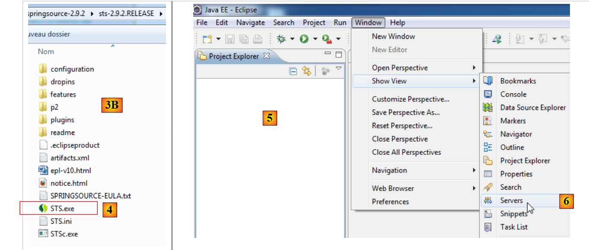
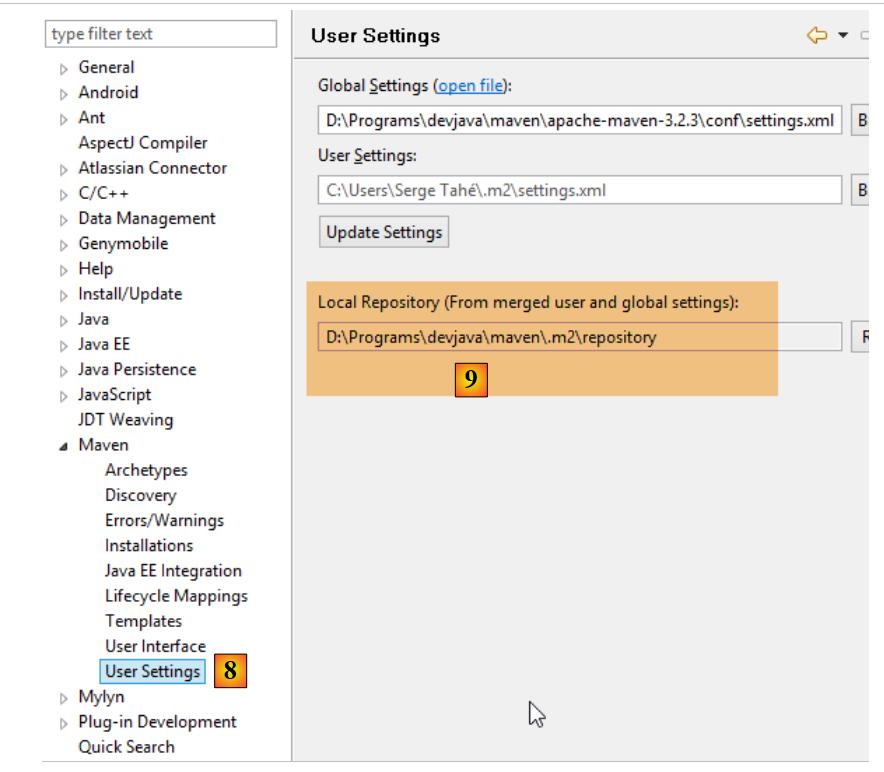
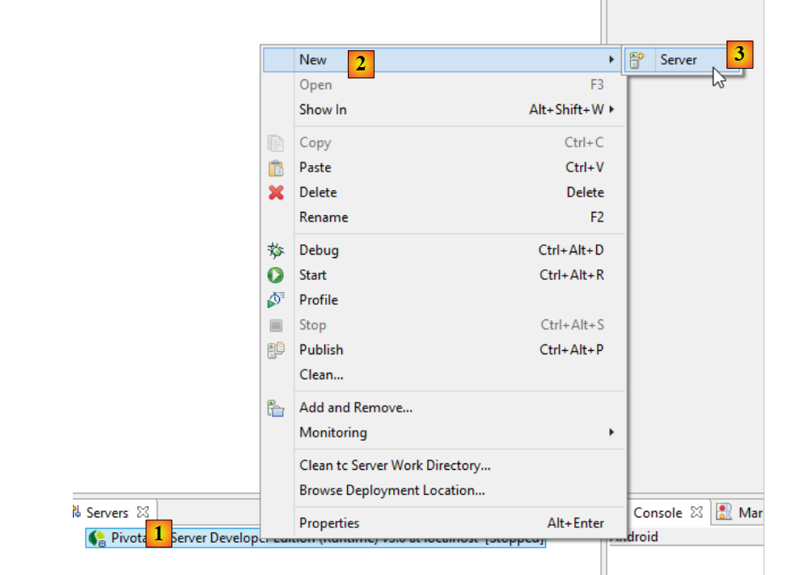
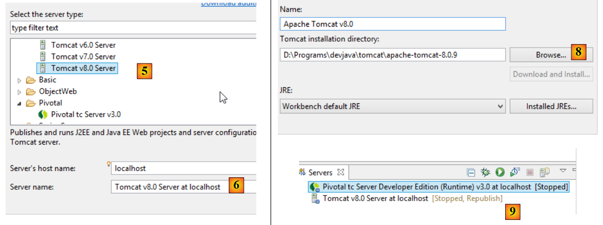
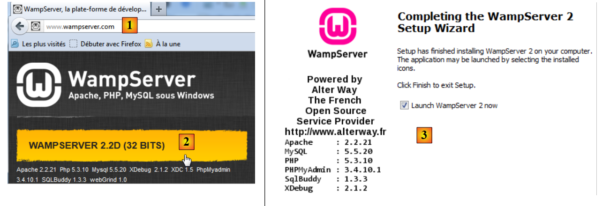
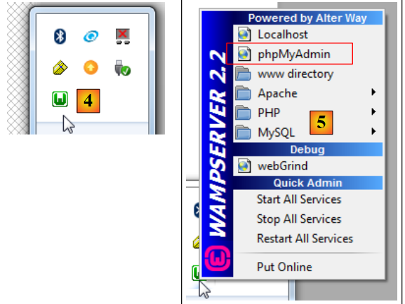
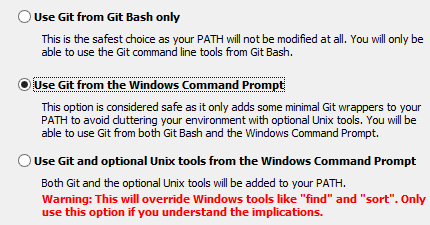

9. Appendices
Here we explain how to install the tools used in this document on Windows 7 or 8 machines.
9.1. Installing a JDK
The latest JDK can be found at the URL [http://www.oracle.com/technetwork/java/javase/downloads/index.html] (October 2014). We will refer to the JDK installation folder as <jdk-install> hereafter.
 |
9.2. Installing Maven
Maven is a tool for managing dependencies in a Java project and more. It is available at [http://maven.apache.org/download.cgi].
 |
Download and unzip the archive. We will refer to the Maven installation folder as <maven-install>.
 |
- In [1], the file [conf/settings.xml] configures Maven;
It contains the following lines:
<!-- localRepository
| The path to the local repository Maven will use to store artifacts.
|
| Default: ${user.home}/.m2/repository
<localRepository>/path/to/local/repo</localRepository>
-->
The default value on line 4, if like me your {user.home} path contains a space (for example [C:\Users\Serge Tahé]), can cause issues with certain software, including IntelliJ IDEA. You should then write something like:
<!-- localRepository
| The path to the local repository Maven will use to store artifacts.
|
| Default: ${user.home}/.m2/repository
<localRepository>/path/to/local/repo</localRepository>
-->
<localRepository>D:\Programs\devjava\maven\.m2\repository</localRepository>
and on line 7, avoid using a path that contains spaces.
9.3. Installing STS (Spring Tool Suite)
We will install SpringSource Tool Suite [http://www.springsource.com/developer/sts], an Eclipse environment pre-configured with numerous plugins related to the Spring framework and also with a pre-installed Maven configuration.
 |
- Go to the SpringSource Tool Suite (STS) website [1] to download the current version of STS [2A] [2B].
 |
 |
- The downloaded file is an installer that creates the file directory structure [3A] [3B]. In [4], we launch the executable,
- in [5], the IDE workspace window after closing the welcome window. In [6], display the application servers window,
 |
- in [7], the servers window. A server is registered. It is a Tomcat-compatible VMware server.
You must specify the Maven installation directory to STS:
 |
- in [1-2], configure STS;
- in [3-4], add a new Maven installation;
 |
- in [5], specify the Maven installation directory;
- in [6], complete the wizard;
- in [7], set the new Maven installation as the default;
 |
- In [8-9], verify the local Maven repository—the folder where it will store the dependencies it downloads and where STS will place the artifacts that are built;
9.4. Installing a Tomcat Server
Tomcat servers are available at the URL [http://tomcat.apache.org/download-80.cgi]. The examples in this document have been tested with version 8.0.9, available at the URL [http://archive.apache.org/dist/tomcat/tomcat-8/v8.0.9/bin/].
 |
Download [1] the ZIP file appropriate for your workstation. Once unzipped, you will see the directory structure [2]. Once this is done, you can add this server to the STS servers:
 |
- In [1-3], add a new server in STS; (to open the Servers window, go to Window / Show View / Other / Server / Servers);
 |
- in [5], select a Tomcat 8 server;
- In [6], give this server a name;
- in [8], specify the installation directory for the previously downloaded Tomcat;
- In [9], the new server;
 |
- In [11-12], start the Tomcat 8 server;
- in [13-14], its log window;
- in [15], to stop it;
9.5. Installing [WampServer]
[WampServer] is , a software suite for developing with PHP, MySQL, and Apache on a Windows machine. We will use it solely for the MySQL database management system.
 |
- On the [WampServer] website [1], choose the appropriate version [2].
- the downloaded executable is an installer. Various pieces of information are requested during installation. These do not concern MySQL, so you can ignore them. Window [3] appears at the end of the installation. Launch [WampServer],
 |
- in [4], the [WampServer] icon appears in the taskbar at the bottom right of the screen [4],
- when you click on it, the [5] menu appears. It allows you to manage the Apache server and the MySQL DBMS. To manage the latter, use the [PhpMyAdmin] option,
- which opens the window shown below,

We will provide few details here on how to use [PhpMyAdmin]. The document provides the necessary information when needed.
9.6. Installing the Chrome plugin [Advanced Rest Client]
In this document, we use Google’s Chrome browser (http://www.google.fr/intl/fr/chrome/browser/). We will add the [Advanced Rest Client] extension to it. Here’s how to do it:
- Go to the [Google Web Store] (https://chrome.google.com/webstore) using the Chrome browser;
- search for the [Advanced Rest Client] app:
 |
- the app is then available for download:
 |
- to get it, you’ll need to create a Google account. The [Google Web Store] will then ask for confirmation [1]:
 |
- in [2], the added extension is available in the [Applications] option [3]. This option appears on every new tab you create (CTRL-T) in the browser.
9.7. Managing JSON in Java
Transparently for the developer, the [Spring MVC] framework uses the [Jackson] JSON library. To illustrate what JSON (JavaScript Object Notation) is, we present here a program that serializes objects into JSON and does the reverse by deserializing the generated JSON strings to recreate the original objects.
The 'Jackson' library allows you to construct:
- the JSON string of an object: new ObjectMapper().writeValueAsString(object);
- an object from a JSON string: new ObjectMapper().readValue(jsonString, Object.class).
Both methods may throw an IOException. Here is an example.
 |
The project above is a Maven project with the following [pom.xml] file;
<?xml version="1.0" encoding="UTF-8"?>
<project xmlns="http://maven.apache.org/POM/4.0.0"
xmlns:xsi="http://www.w3.org/2001/XMLSchema-instance"
xsi:schemaLocation="http://maven.apache.org/POM/4.0.0 http://maven.apache.org/xsd/maven-4.0.0.xsd">
<modelVersion>4.0.0</modelVersion>
<groupId>istia.st.pam</groupId>
<artifactId>json</artifactId>
<version>1.0-SNAPSHOT</version>
<dependencies>
<dependency>
<groupId>com.fasterxml.jackson.core</groupId>
<artifactId>jackson-databind</artifactId>
<version>2.3.3</version>
</dependency>
</dependencies>
</project>
- lines 12–16: the dependency that brings in the 'Jackson' library;
The [Person] class is as follows:
package istia.st.json;
public class Person {
// data
private String lastName;
private String firstName;
private int age;
// constructors
public Person() {
}
public Person(String lastName, String firstName, int age) {
this.lastName = lastName;
this.firstName = firstName;
this.age = age;
}
// signature
public String toString() {
return String.format("Person[%s, %s, %d]", lastName, firstName, age);
}
// getters and setters
...
}
The [Main] class is as follows:
package istia.st.json;
import com.fasterxml.jackson.databind.ObjectMapper;
import java.io.IOException;
import java.util.HashMap;
import java.util.Map;
public class Main {
// the serialization/deserialization tool
static ObjectMapper mapper = new ObjectMapper();
public static void main(String[] args) throws IOException {
// creating a person
Person paul = new Person("Denis", "Paul", 40);
// Display JSON
String json = mapper.writeValueAsString(paul);
System.out.println("JSON=" + json);
// Instantiate Person from JSON
Person p = mapper.readValue(json, Person.class);
// display Person
System.out.println("Person=" + p);
// an array
Person virginie = new Person("Radot", "Virginie", 20);
Person[] people = new Person[]{paul, virginie};
// display JSON
json = mapper.writeValueAsString(people);
System.out.println("JSON people=" + json);
// dictionary
Map<String, Person> hpeople = new HashMap<String, Person>();
hpeople.put("1", paul);
hpeople.put("2", virginie);
// Display JSON
json = mapper.writeValueAsString(hpeople);
System.out.println("JSON hpeople=" + json);
}
}
Executing this class produces the following screen output:
Key takeaways from the example:
- the [ObjectMapper] object required for JSON/Object transformations: line 11;
- the [Person] --> JSON transformation: line 17;
- the JSON --> [Person] transformation: line 20;
- the [IOException] thrown by both methods: line 13.
9.8. Installing [WebStorm]
[WebStorm] (WS) is JetBrains' IDE for developing HTML/CSS/JS applications. I found it perfect for developing Angular applications. The download site is [http://www.jetbrains.com/webstorm/download/]. It is a paid IDE, but a 30-day trial version is available for download. There are affordable personal and student versions.
To install JS libraries within an application, WS uses a tool called [Bower]. This tool is a module of [Node.js], a collection of JS libraries. Additionally, JS libraries are fetched from a Git repository, requiring a Git client on the machine performing the download.
9.8.1. Installing [node.js]
The [node.js] download site is [http://nodejs.org/]. Download the installer and run it. That’s all you need to do for now.
9.8.2. Installing the [bower] tool
The [bower] tool, which allows you to download JavaScript libraries, can be installed in several ways. We will install it from the command line:
C:\Users\Serge Tahé>npm install -g bower
C:\Users\Serge Tahé\AppData\Roaming\npm\bower -> C:\Users\Serge Tahé\AppData\Roaming\npm\node_modules\bower\bin\bower
bower@1.3.7 C:\Users\Serge Tahé\AppData\Roaming\npm\node_modules\bower
├── stringify-object@0.2.1
├── is-root@0.1.0
├── junk@0.3.0
...
├── insight@0.3.1 (object-assign@0.1.2, async@0.2.10, lodash.debounce@2.4.1, req
uest@2.27.0, configstore@0.2.3, inquirer@0.4.1)
├── mout@0.9.1
└── inquirer@0.5.1 (readline2@0.1.0, mute-stream@0.0.4, through@2.3.4, async@0.8
.0, lodash@2.4.1, cli-color@0.3.2)
- line 1: the [node.js] command that installs the [bower] module. For the command to work, the [npm] executable must be in the machine’s PATH (see section below);
9.8.3. Installing [Git]
Git is a software version control system. There is a Windows version called [msysgit] available at the URL [http://msysgit.github.io/]. We will not use [msysgit] to manage versions of our application, but simply to download JS libraries found on sites like [https://github.com], which require a special access protocol provided by the [msysgit] client
The installation wizard offers several steps, including the following:
 |  |
For the other installation steps, you can accept the default values provided.
Once Git is installed, verify that the executable is in your machine’s PATH: [Control Panel / System and Security / System / Advanced System Settings]:
 |  |
The PATH variable looks like this:
D:\Programs\devjava\java\jdk1.7.0\bin;D:\Programs\ActivePerl\Perl64\site\bin;D:\Programs\ActivePerl\Perl64\bin;D:\Programs\sgbd\OracleXE\app\oracle\product\11.2.0\client;D:\Program Files\sgbd\OracleXE\app\oracle\product\11.2.0\client\bin;D:\Program Files\sgbd\OracleXE\app\oracle\product\11.2.0\server\bin;...;D:\Program Files\javascript\node.js\;D:\Program Files\utilities\Git\cmd
Verify that:
- the path to the [node.js] installation folder is present (here D:\Programs\javascript\node.js);
- the path to the Git client executable is present (here D:\Program Files\Utilities\Git\cmd);
9.8.4. Configuring [WebStorm]
Let’s now check the [WebStorm] configuration
 |  |
 |
Above, select option [1]. The list of already installed [node.js] modules appears in [2]. This list should only contain line [3] for the [bower] module if you followed the previous installation process.
9.9. Installing an Android emulator
The emulators provided with the Android SDK are slow, which discourages their use. The company [Genymotion] offers a much more powerful emulator. It is available at the URL [https://cloud.genymotion.com/page/launchpad/download/]
(February 2014).
You will need to register to obtain a version for personal use. Download the [Genymotion] product with the VirtualBox virtual machine;

Install and then launch [Genymotion]. Next, download an image for a tablet or phone:
 |
- in [1], add a virtual device;
- in [2], choose one or more devices to install. You can refine the displayed list by specifying the desired Android version [3] and the device model [4];
 |
- Once the download is complete, you will see in [5] the list of virtual devices available for testing your Android apps;